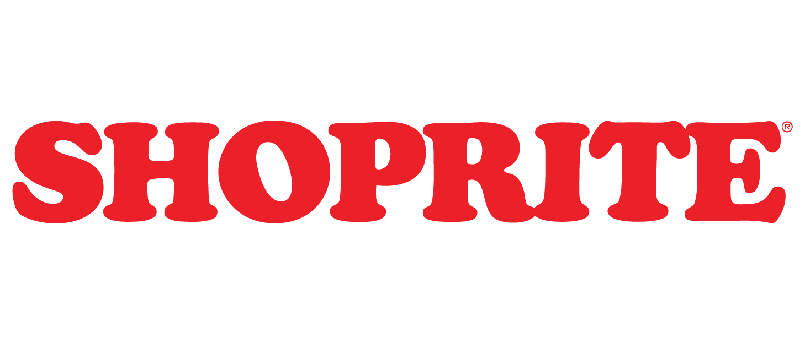
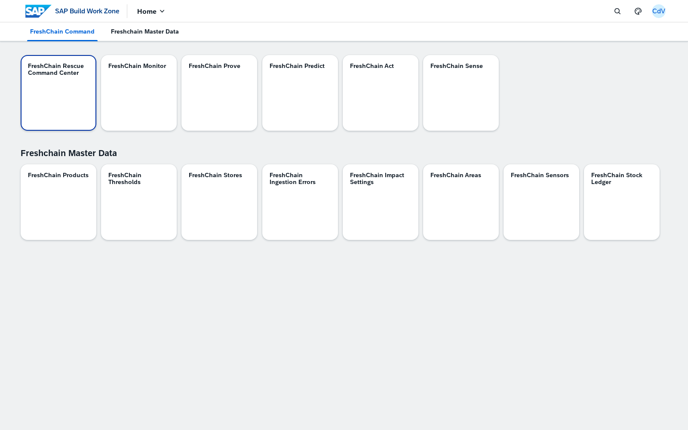
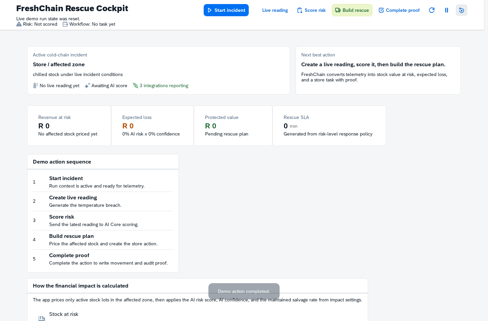
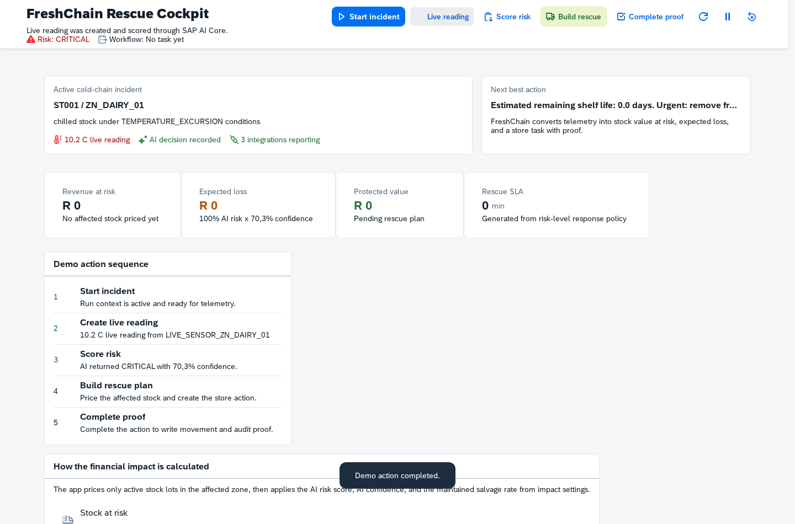

Cold-chain rescue
SAP BTP product overview
FreshChain
Cold-chain rescue and protected-value control on SAP BTP
FreshChain connects store telemetry, stock ledger context, AI risk scoring, guided rescue actions, and financial proof in one governed operating process.
1
Sense
Sensor readings enter CAP services with store, zone, and stock context.
2
Predict
SAP AI Core scoring creates risk, confidence, shelf-life, and recommendation records that are persisted for audit.
3
Act
Fiori apps guide the rescue action: affected stock, assignment, SLA, workflow proof, and completion status.
4
Prove
Financial and operational outcomes are calculated from stock ledger, prediction, and completed intervention records.
R 4 526
Protected value shown in the completed rescue proof
90 units
Affected chilled stock in the rescue incident
100%
Actioned workflow state from the Work Zone KPI tile
FreshChain is structured around the operating evidence a store and head-office team need: incident context, risk decision, action ownership, completion proof, and financial impact.

The command row covers protected value, exposure, rescue workflow, financial audit, incident execution, and cold-chain monitoring. The master-data row maintains the governed inputs behind the process.

Start incident establishes the business context for the cold-chain exception.

Live reading records the condition that drives the downstream prediction and rescue action.
The reading is the trigger. Persistence, scoring, intervention planning, financial calculation, and proof are produced by FreshChain services and stored business records.
CommandFreshChain Command Center
Current KPI position for protected value, exposure, workflow action, and cold-chain status.
PredictFreshChain Predict
Lists SAP AI Core risk decisions with score, confidence, store, zone, and prediction type.
ActFreshChain Act
Supports operational decisioning for stock rescue, movement, markdown, and store-level response.
ProveFreshChain Prove
Audits completed interventions and explains where protected revenue and outcome values come from.
MonitorFreshChain Monitor
Tracks cold-chain events, ingestion health, and the operational telemetry needed to maintain confidence.
IntegrationsFreshChain Integrations
Platform hand-offs, AI Core proof, message processing, and runtime status.
FreshChain keeps the core operating chain visible: command context, incident control, AI decision, rescue plan, completion proof, and financial outcome.